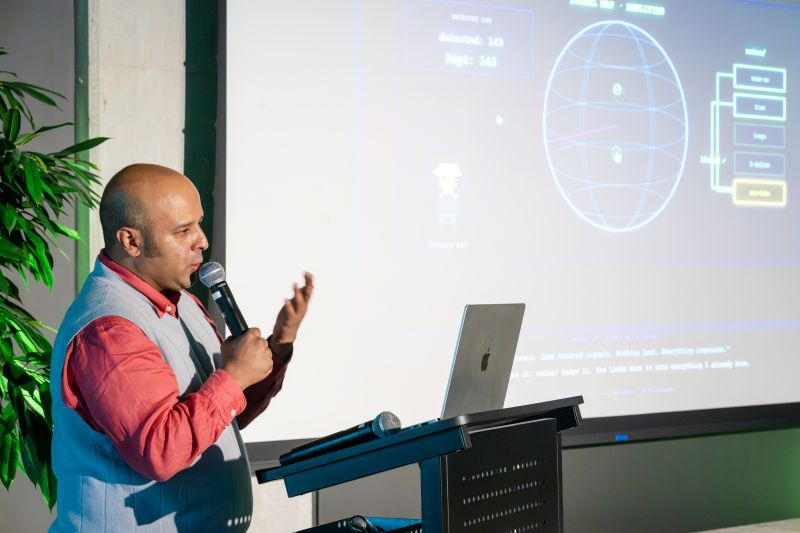
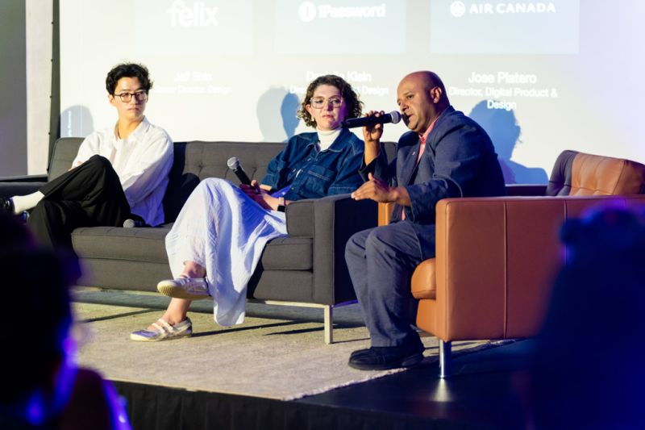
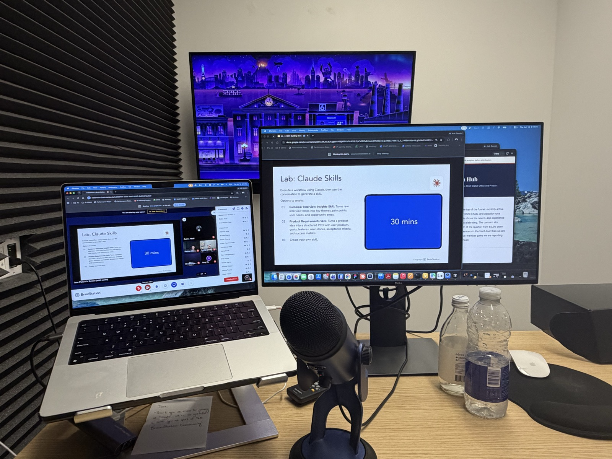

Jose Platero is a builder who runs a 45+ person org. He builds product organizations the way product people build products: as systems with operating models, feedback loops, and version numbers. The newest version thinks with AI.
As a product person, I vowed that if I ever got the chance to work on it, I would make it great. Fifteen years of preparation first: TELUS, Shaw Media, agencies, and Aimia's innovation lab, running 100+ lean experiments. Then Air Canada, 2019. On my first day I walked into my boss's office and announced I was going to change how people travel. I didn't get to finish the sentence. The priority was launching the new Aeroplan program. So we launched it: a new digital member experience, partnerships with Uber, Starbucks, and Marriott, and a member base that doubled.
Here's the failure part, because every true story has one. I eventually got the homepage into my portfolio, with no development team and a mandate to keep the lights on. My scrappy team of overflow bug-fixers changed the header from black to white and removed one button, and it caused an uproar. The brand team pushed back hard, and they were right: aircanada.com no longer felt like Air Canada. I got excited, pitched a cosmetic update, and after every approval, the only thing that shipped was changing the header back to black. I had let excitement drive. I forgot to think like a product person.
So we rebooted. Full discovery: lounges, customer interviews, the data. The business had expanded from flights to cars, hotels, packages, and loyalty, and the page had never scaled with it. Customers were stuck in a Where's Waldo puzzle. We banned the word redesign. This was a rethink of what the page was for, shipped as a beta to a subset of members, expanded loop by loop. That work became a Webby honoree. The bigger wins were underneath: a senior PM carried the vision forward, an overflow bug-squad became a real product-engineering team, and I learned that there is all this work underneath the work that makes the work actually work.
The trap I watch new managers fall into is the one I had to escape myself: the high performer's certainty that you can do it faster than anyone else. You end up too busy to hire, so you stay too busy. The mindset shift is slow down to go fast. Hiring and onboarding cost you real time up front, and then the returns turn exponential. Past forty-five people across four practices, the job stopped being the products and became the people who ship them, so I stopped hiring hands and started developing a manager layer.
The proof is the status program relaunch. The biggest change to the program since the Aeroplan relaunch itself, 9M+ members moving to spend-based earning, and it was run day-to-day by one of my senior managers. My job was the operating system it ran on and the air cover it needed. The launch landing without me in every room is the point: that is what the manager layer is for.
The other calibration is speed. Getting a new hire moving used to take me three months; I have it down to three days, with real ownership and a chunk of the overflow on their plate by the end of the week. And I teach one measure of progress: decisions made today, not meetings booked three weeks out. Pick up the phone, send the message, door-pop. That is the difference between a product shipping in six months and shipping in three weeks.
I will not pretend the AI wave arrived calmly. For somebody who considers himself a craftsperson, there was panic in watching the game change. The answer was to get into the tools, learn from the AI natives around me, and then build what I learned into the org: agents that draft the PRDs and user stories, automate the executive reporting, audit initiatives, and plan capacity. Governed, repeatable, used across the team. The manual prep work is what got replaced, not the judgment.
Compass, the design system I founded, is the oldest proof of the method. My first pitch was efficiency, and it hit a pain nobody would fund. Then someone senior on the brand team said the real one out loud: when people experience Air Canada, it doesn't feel like Air Canada. That was the pain. I reframed everything around it, the brand team became the advocates, and the system got built. Now it's becoming the AI layer: components and tokens AI tools can read, so a prototype comes out on-brand the first time. The same platform thinking gave marketing a self-serve campaign tool, and turnaround went from months to minutes.
One rule holds it together: nothing rolls out to the team that I haven't run myself first. My own work runs on the same machinery, research agents that brief me every morning and a knowledge system an AI can actually operate. When one of my own pipelines failed silently, the lesson became policy: every system ships with a watchdog, because a system reporting success is grading its own homework.
Half of an executive's job is translation: taking something complex and making a room care about it. For a talk on AI-native second brains, I didn't open with slides. I built a game and used it as the narrative: each level is a piece of how the system works, so the audience follows the concept the way they'd follow a story, and then the real system picks up where the game leaves off.
It's live below. Play through it and you'll follow the same narrative the room did.

When I demo this system on stage, I open the same way every time: I just want to solve a simple problem for myself. I need to sleep more. Anyone running a wide portfolio knows the 2am call. The top boss wants an update, so he calls my boss, who calls me. This machine is my answer.
Every morning at 7:05, before I am awake, launchd fires a headless pipeline: four research agents read the world through four lenses, write their briefs into the archive, and a script compiles the best of it into one email. By the time I am on my bike, the day's intelligence is a podcast in my ears.
And because a system reporting success is grading its own homework, an independent watchdog on separate infrastructure checks the outcome, not the log: did the files land, did the email actually arrive in the inbox. That rule has a scar behind it. The original scheduler once skipped three days while reporting green.
Four of the systems are below, live. The morning brief, the second brain's capture to synthesis, the exec report, and the team OS booting a new team to baseline. Pick one and watch it run: every run ends in an artifact.
Executive Pulse · macro signal
AI capex faces its first real credibility test. Markets sold chips hard after a frontier model slipped months and TSMC lifted capex guidance to $60-64B. The board-level question of 2026: will the buildout earn its return? Stop treating AI investment as a blank check; demand a return thesis on every major AI line item.
Question worth asking your team this week
If our most important AI vendor slipped their roadmap by six months tomorrow, what breaks in our plan, and how fast could we swap them out?
4 briefs · compiled and sent by the pipeline · excerpt from the real July 17 edition
What changed this week
Decisions & escalations
generated by the exec-report skill · sample run, details anonymized · every line links back to Jira


Three talks. Five reels. What people said after.
Loading footage…
Shot vertical for social. The full feed is on Instagram.
Afterward, on LinkedIn. Each card links to the original post.
"What immediately stood out was his ability to transform complex ideas into stories people can truly connect with... showing how AI can become a practical thinking partner rather than just another tool."
Beliz KasirgaData Operations & Systems Analyst Read the post ↗︎"Jose shared how he's built different AI structures and workflows to support how he thinks, works and makes decisions... AI shouldn't replace our judgment. The bigger opportunity is building better systems around it."
Luis BridgemanSenior Manager, Strategy & Operations, Growth Bets · Uber Read the post ↗︎"Product leaders don't need tools to generate more content. They need a system to manage cognitive overload... AI should be a thinking partner, not just an execution engine."
Bailey ZambriAssociate Director · BrainStation Read the post ↗︎"I went from commercial PM to building Flowwise, a live AI-powered fintech app, from scratch... A huge thank you to my instructor Jose Platero for his guidance, feedback, and genuine investment in our growth."
Chelsea PascualProduct Manager, Fintech · BrainStation PM Certificate Read the post ↗︎If we work together, the first quarter looks like this: I learn how your org actually ships, I find the manual work that shouldn't exist, and I start building the operating model your team runs without me in the room.